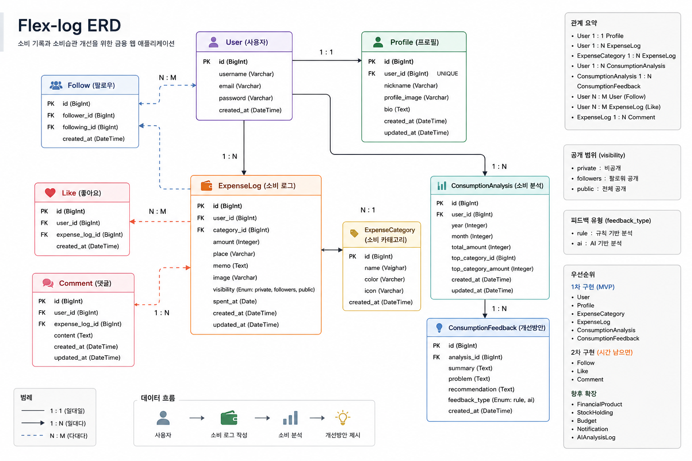

Finance SNS
Flex-Log
소비를 SNS처럼 기록하고, 기록된 데이터를 AI 소비 분석과 금융상품 추천으로 연결하는 금융 웹 애플리케이션
소비 기록
친구 피드
AI 분석
예적금 추천
가계부는 필요하지만, 꾸준히 쓰기는 어렵습니다.
문제의식
- 1금액과 카테고리만 입력하는 기존 방식은 기록 동기가 약합니다.
- 2숫자 중심 기록만으로는 언제, 왜 소비했는지 떠올리기 어렵습니다.
- 3SNS와 구독 서비스 환경에서 소비 기회는 늘지만, 소비 습관을 돌아보는 도구는 부족합니다.
누구를 위한 서비스인가
소비를 관리하고 싶지만 기존 가계부를 오래 유지하지 못하는 사용자
특히 이미지와 짧은 글로 일상을 기록하는 방식에 익숙한 사용자가 자연스럽게 소비 데이터를 남기도록 설계했습니다.
기록의 진입장벽을 낮추고, 기록 이후의 행동까지 연결합니다.
핵심 기능은 “기록 → 분석 → 추천” 흐름으로 구성했습니다.
소비 로그
- A이미지 기반 소비 기록 작성
- B금액, 카테고리, 메모 저장
- C작성, 조회, 수정, 삭제
SNS 피드
- A친구 요청, 수락, 목록 관리
- B친구 소비 로그 피드 조회
- C24시간 노출 후 피드에서 숨김
금융 인사이트
- AAI 소비 분석 및 위험도 표시
- BFinLife 기반 예적금 추천
- C금은 시세, 은행 지도, 영상 검색 확장
Flex-Log는 가계부가 아니라 소비 스토리 피드입니다.
Flex-Log
₩
식비
12,000원
친구 공개
AI 분석
위험도 보통
차별점 1. 기록 경험
소비를 숫자만 입력하는 일이 아니라 사진과 문장으로 남기는 행동으로 바꿨습니다.
차별점 2. 데이터 활용
기록된 소비 로그는 피드에서 사라져도 DB에는 남아 분석과 추천의 근거가 됩니다.
차별점 3. 금융 연결
소비 분석에서 끝나지 않고 예적금 추천, 은행 지도, 금융 정보 탐색까지 확장했습니다.
시연은 사용자가 처음 서비스를 쓰는 흐름으로 진행합니다.
회원가입 / 로그인계정 생성 후 인증이 필요한 주요 화면으로 이동합니다.
소비 로그 작성이미지, 금액, 카테고리, 내용을 입력해 소비를 기록합니다.
친구 피드 확인친구 관계인 사용자들의 소비 로그를 피드로 확인합니다.
소비 AI 분석오늘, 이번 달, 올해 단위로 총액, 평균, 위험도, 개선 포인트를 확인합니다.
AI 예적금 추천분석 결과와 금융상품 데이터를 바탕으로 추천 상품과 이유를 확인합니다.
발표 중 강조할 지점
“소비 로그 하나가 피드, 분석, 금융 추천으로 이어진다”는 연결 구조
전 기능을 길게 보여주기보다, 기록 데이터가 서비스 안에서 어떻게 재사용되는지를 중심으로 설명하면 15분 안에 흐름이 선명해집니다.
데이터 구조는 ExpenseLog를 중심으로 설계했습니다.

기술 스택은 구현 속도와 API 연동 안정성을 기준으로 선택했습니다.
짧은 기간에 맞춰 브랜치와 작업 영역을 분리했습니다.
역할 분담
- BBackend 담당
DB 모델, 인증, 소비 로그 API, 분석 및 외부 API 연동 - FFrontend 담당
Vue 화면, 피드 UI, 분석 화면, 금융 탭 및 사용자 흐름 구현 - D공통
요구사항 정리, ERD/API 문서, 시연 시나리오, 통합 테스트
Git 운영 방식
최종 안정 버전직접 push하지 않고 검증된 코드만 반영
주차별 통합 브랜치project/week1, project/week2 기준으로 통합 테스트
기능 단위 작업feature, fix, docs 브랜치에서 작업 후 PR 병합
어려웠던 지점은 외부 API와 데이터 유지 정책이었습니다.
24시간 피드
처음에는 24시간 후 삭제를 생각했지만, 분석 데이터가 사라지는 문제가 있었습니다.
해결: DB에서는 유지하고 피드에서만 숨기는 방식으로 변경
AI / 외부 API 실패
API 키, 호출 제한, 네트워크 오류로 시연 중 실패할 수 있는 위험이 있었습니다.
해결: DB 저장 데이터와 규칙 기반 fallback으로 최소 흐름 보장
기능 범위 조절
소비 기록, SNS, 분석, 금융 기능이 모두 있어 우선순위 조절이 필요했습니다.
해결: 기록 → 분석 → 추천 흐름에 직접 연결되는 기능부터 구현
배운 점은 “데이터 흐름을 먼저 설계해야 기능이 연결된다”는 점입니다.
개발 과정에서 얻은 것
- 1요구사항을 ERD와 API 명세로 구체화하는 과정
- 2Django REST Framework와 Vue를 연결하는 구조
- 3외부 API 실패 가능성을 고려한 예외 처리
- 4사용자 경험과 분석 데이터 보존 사이의 균형
개선 방향
더 정확한 추천을 위해 소비 데이터 품질과 사용자 입력 정보를 함께 개선
예산 설정, 고정비/변동비 분리, OCR 영수증 인식, 추천 결과 피드백 반영, 실제 금융상품 비교 UX 고도화를 다음 단계로 생각할 수 있습니다.
Flex-Log는 소비를 과시하는 서비스가 아니라, 기록을 자산으로 바꾸는 서비스입니다.
발표 시간 권장 배분: 문제 정의 2분, 기능 소개 4분, 시연 6분, 기술/협업/회고 3분